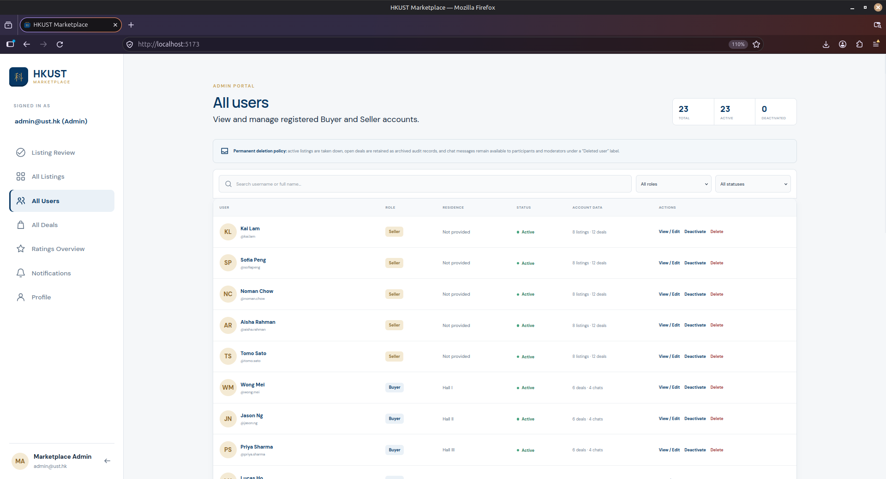
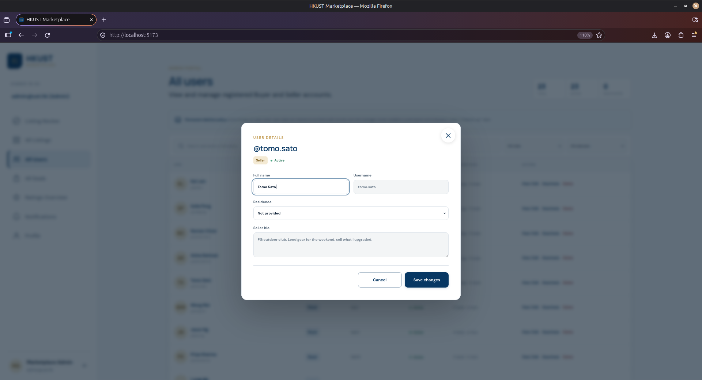
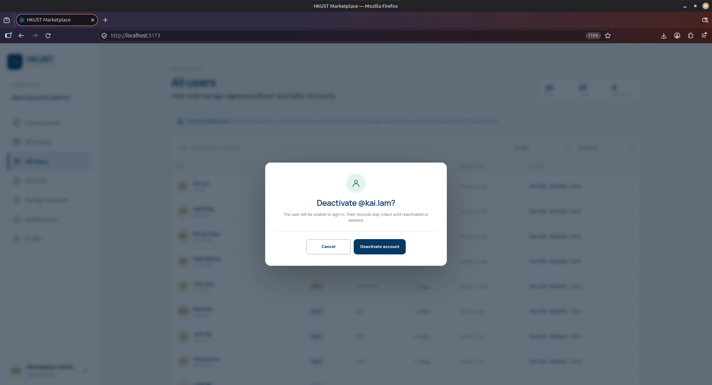
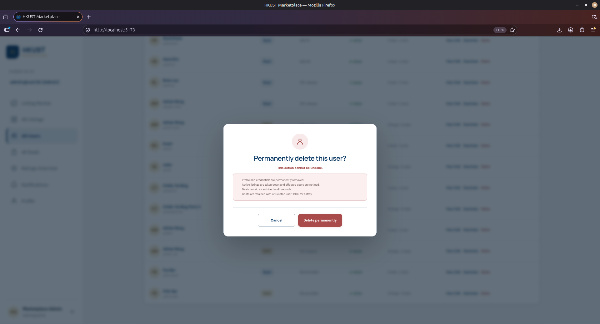
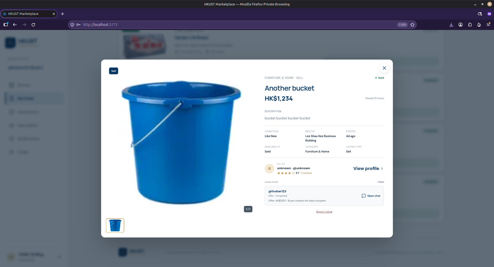
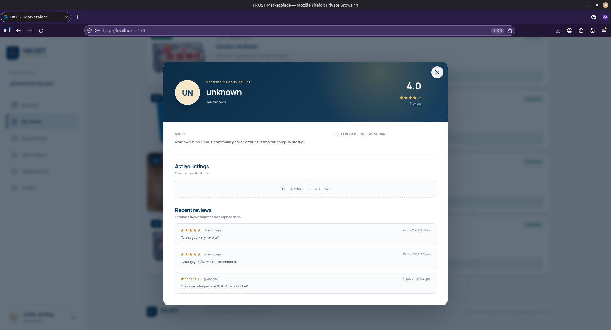

The manage users screen.

The edit user prompt.

The user deactivation confirmation prompt.

The user deletion confirmation prompt. If a user is deleted, his listings are taken down and all mentions of him is replaced with @unknown.


Listings, profiles, etc. of deleted users show as @unknown.